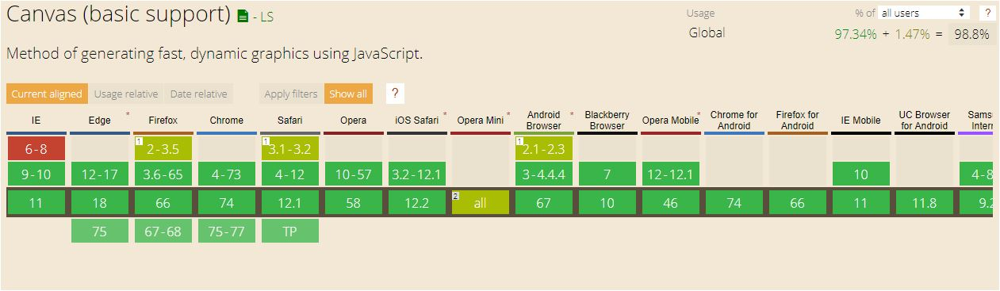
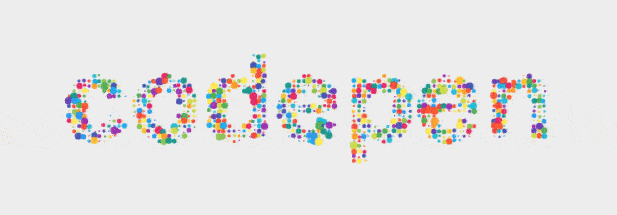
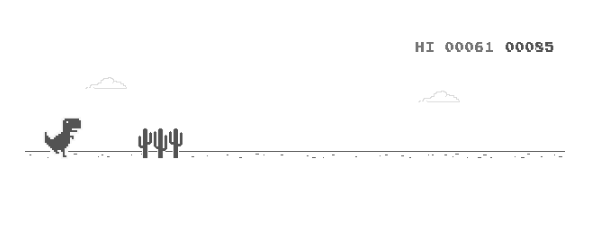
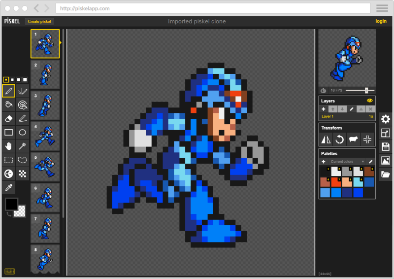
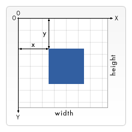
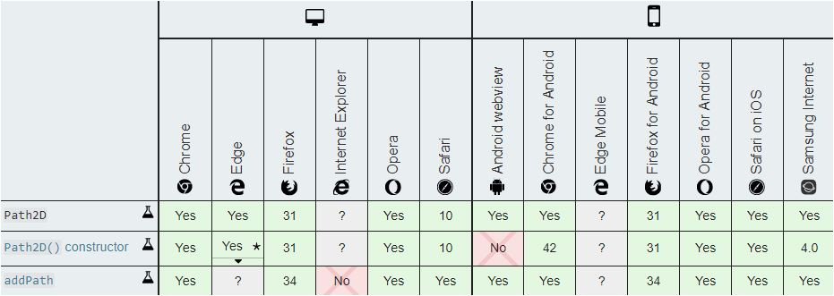

<canvas>
Yahor Hlushanko
Canvas
- History
- Usage
- What is canvas?
- Basics:
- Create/resize canvas
- Context
- Drowing simple shapes
- Path2d object
- Q&A />
History
2004 Apple, part of WebKit component of Mac OS X, for Dashboard widgets and Safary browser
2005 – 2006– adopted in Gecko and Opera browsers
WHATWG standardized canvas for use on new proposed specifications for next generation web technologies.
28.10.2014 - HTML5 new element < canvas >
History
Browser compatibility
Usage
Animations
Cool backgrounds
Games
Graphic editors - Piskel
Graph & chart libraries

What is canvas?
Create/resize canvas
HTML5
JavaScript
const myCanvas = document.getElementById('my-canvas');
myCanvas.width = 300; // myCanvas.width = window.innerWidth;
myCanvas.height = 100;
Create/resize canvas
CSS
.paint-canvas {
width: 300px;
height: 100px;
border: 1px solid black;
display: block;
margin: 1rem;
{
Context
CanvasRenderingContext2D
const myCanvas = document.getElementById('my-canvas');
myCanvas.width = 300; // myCanvas.width = window.innerWidth;
myCanvas.height = 100;
const ctx = myCanvas.getContext('2d');
Let's draw it
Drawing simple shapes
Prepare...
fillStyle = '#ffffff';
strokeStyle = '#ff0000';
lineWidth = 10;
beginPath();
closePath();
Drawing simple shapes
Start...
rect(x, y, width, height);
arc(centerX, centerY, radius, 0, 2 * Math.PI);
moveTo(x, y);
Drawing simple shapes
Wait...
lineTo(x, y);
quadraticCurveTo(cpx, cpy, x, y);
bezierCurveTo(cp1x, cp1y, cp2x, cp2y, x, y);
Drawing simple shapes
Wait...

Drawing simple shapes
Draw!..
stroke();
fill();
clip();
Drawing simple shapes
Draw!..
const myCanvas = document.getElementById('my-canvas');
myCanvas.width = 70;
myCanvas.height = 70;
const ctx = myCanvas.getContext('2d');
ctx.beginPath();
ctx.rect(0, 0, 70, 70);
ctx.fill();
ctx.fillStyle='yellow';
ctx.beginPath();
ctx.arc(37, 37, 13, Math.PI / 7, -Math.PI / 7);
ctx.lineTo(40, 37);
ctx.fill();
ctx.fillStyle ='black';
ctx.beginPath();
ctx.arc(36, 30.5, 2.5, 0, 2 * Math.PI);
ctx.fill();
Drawing simple shapes
Draw!..
path2D() object
new Path2D(); // empty path object
new Path2D(path); // copy from another Path2D object
new Path2D(d); // path from SVG path data
path2D() object
Using SVG paths
const pathFromSVG = new Path2D('M 10 10 h 80 v 80 h -80 Z');
ctx.fill(pathFromSVG);